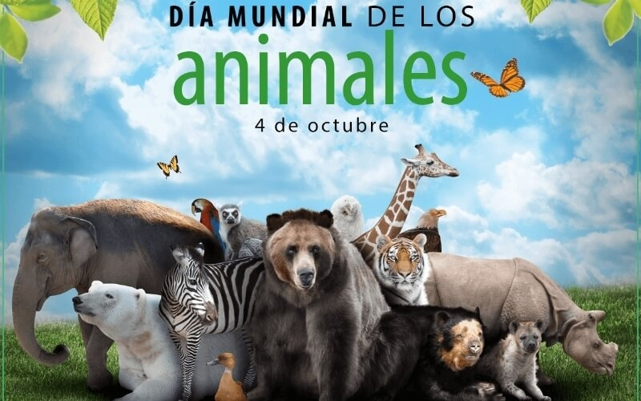
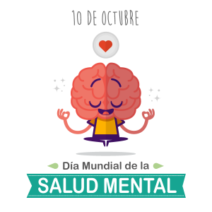
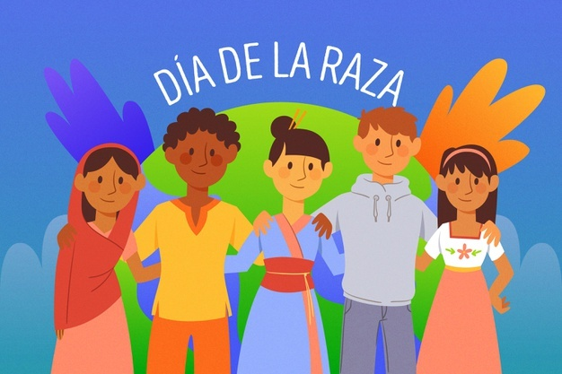
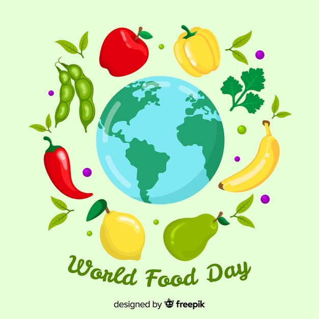

El 4 de octubre se celebra el Día Mundial de los Animales en conmemoración de San Francisco de Asís. Este santo, que nació en 1182 en Italia, dejó como enseñanza a la humanidad que debemos comprender cuál es nuestro lugar en la Tierra, ya que el bienestar de nosotros está integrado al bienestar de todo los animales y el medio ambiente.
El Día Mundial de la Salud Mental (DMH), que se celebra cada 10 de octubre, es promovido por la Federación Mundial de la Salud Mental y cuenta con el respaldo de la Organización Mundial de la Salud (OMS). El evento representa un compromiso global para crear conciencia sobre los problemas de salud mental en todo el mundo y movilizar esfuerzos en apoyo de la salud mental.

El Día de la Raza es una de varias denominaciones que se le da al 12 de octubre, día en que se conmemora la navegación y exploración del continente americano por Cristóbal Colón y su tripulación en 1492.
Cada 16 de octubre desde el año 1979 se conmemora el Día Mundial de la Alimentación, una celebración promovida por la Organización de las Naciones Unidas para la Agricultura y la Alimentación (FAO), con el claro objetivo de disminuir el hambre en el mundo, propósito que también busca la Agenda 2030 con su meta de hambre cero.
Halloween es una celebración internacional que tiene lugar el 31 de octubre, víspera de la fiesta cristiana occidental del Día de Todos los Santos. Aparece especialmente vinculado al primer tramo de Allhallowtide,6 el tiempo del año litúrgico dedicado a recordar a los muertos, incluidos los santos (a través de sus reliquias), mártires y todos los fieles difuntos.